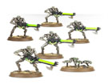
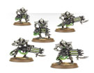

太空死灵
太空死灵是一个非常古老的种族，他们在与其同时代的对手—古圣进行了一场大战之后又与自己的神明开战并将其抹杀，但这也使得太空死灵实力大削，无力对抗其他威胁。

武士： 太空死灵的基础单位，他们的思想已经在转化为机械时被完全消除了，现在他们只会听从命令向目标前进，即使受到伤害倒下了，构成他们的活体金属也会慢慢修复他们的身体使他们再次获得战斗力。

不朽者： 同为太空死灵的基础单位，但他们保留了一部分意识，使得他们可以理解基本的战略，成为了像小队指挥官一样的存在，领导其他武士进行行动。